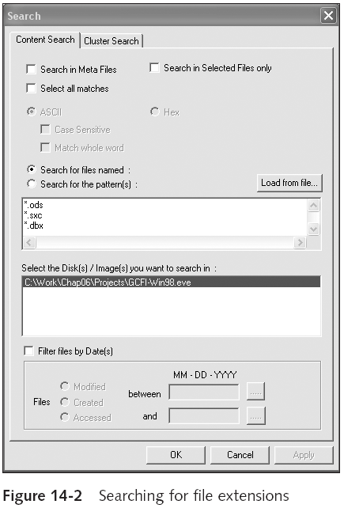
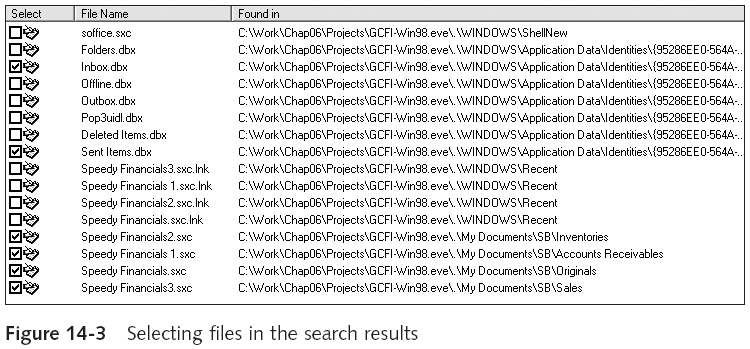
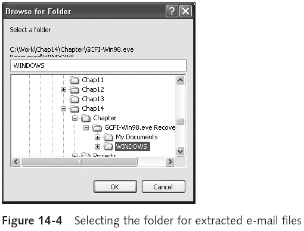
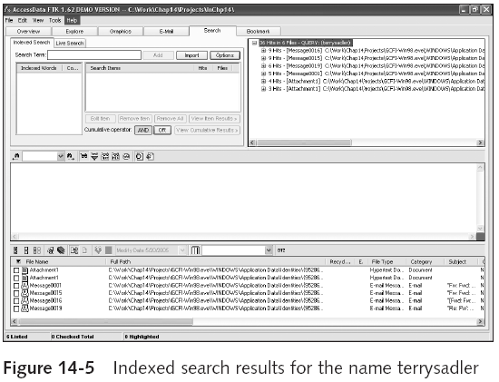
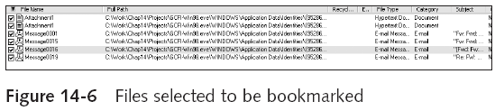
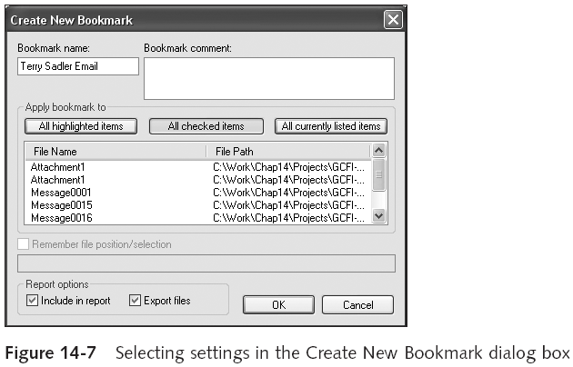
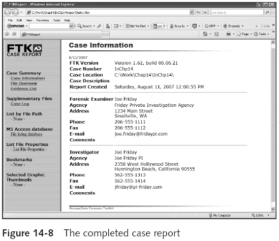

Learning Objectives
By the end of this week, you will be able to:
- Explain the importance of forensics tools in digital investigations
- Describe how forensics software tools generate report findings
- Use ProDiscover Basic to search for evidence and generate reports
- Use FTK to create cases, analyze evidence, perform keyword searches, and generate reports
- Apply best practices for writing clear, objective forensic reports
1. Introduction to Forensics Software Tools
What are Computer Forensics Tools?
Computer forensics tools are specialized software applications designed to assist investigators in acquiring, analyzing, and reporting on digital evidence. These tools provide a structured, repeatable approach to examining digital media while maintaining the integrity of the original evidence.
Forensic software tools are indispensable in modern digital investigations. The volume of data on even a single hard drive can be enormous -- terabytes of files, emails, logs, and metadata. Without specialized tools, examining this data manually would be impractical and error-prone. Forensics tools automate many aspects of the investigation process, enabling examiners to work efficiently while producing results that are legally admissible.
Core Functions of Forensics Tools
Evidence Acquisition
Create forensic images (bit-for-bit copies) of storage media using write-blocking technology, ensuring the original evidence remains unaltered.
Analysis and Examination
Recover deleted files, analyze file systems, perform keyword searches, examine email archives, and build timelines of user activity.
Documentation and Reporting
Generate structured reports in multiple formats, bookmark important findings, and create a clear record of the examination process.
Verification and Validation
Calculate and verify hash values, maintain audit trails of all examiner actions, and ensure results are reproducible by other examiners.
2. Importance of Forensics Tools
Forensics tools are not merely convenient -- they are essential to the success and credibility of any digital investigation. Their importance extends beyond technical capability into the legal and procedural domains.
Why Forensics Tools Matter
Legal Admissibility
Courts require that digital evidence be collected and analyzed using validated, accepted tools. Evidence gathered using ad-hoc methods or unproven software risks being challenged and excluded. Forensics tools provide the standardized methodology that courts expect.
Handling Massive Data Volumes
Modern storage devices contain terabytes of data -- millions of files, emails, and log entries. Manual examination is simply not feasible. Forensics tools automate searching, filtering, and categorizing data, allowing examiners to focus on relevant evidence.
Repeatability and Verification
A fundamental principle of forensic science is that another qualified examiner should be able to reproduce the same results using the same tools and methodology. Forensics tools support this by maintaining detailed logs of every action performed during the examination.
Chain of Custody Support
Forensics tools maintain comprehensive audit trails that document every action taken on the evidence -- from acquisition through analysis to reporting. These logs are essential for demonstrating that the chain of custody was maintained throughout the investigation.
Efficiency Under Time Pressure
Investigations often face legal deadlines, court dates, and time-sensitive circumstances. Forensics tools dramatically reduce the time required to search, analyze, and report on digital evidence, enabling examiners to meet these critical deadlines.
A forensic tool is only as good as the examiner using it. Tools do not replace expertise -- they augment it. An examiner must understand what the tool is doing, why, and how to interpret the results. Blind reliance on tool output without understanding can lead to incorrect conclusions.
3. Report Formats and Generation
Forensic software tools generate reports when performing analysis. These reports serve as the primary documentation of the examiner's findings and are often the most important deliverable of an investigation. Different formats serve different audiences and purposes.
| Report Format | Description | Best Used For |
|---|---|---|
| Plaintext (.txt) | Simple, unformatted text output with no styling or embedded images | Machine-readable logs, quick reference, archival, and situations where formatting is unnecessary |
| Word Processor (.doc/.rtf) | Formatted documents with headers, tables, styling, and embedded images | Formal court reports, attorney review, official documentation requiring professional presentation |
| HTML (.html) | Web-based format with hyperlinks, navigation, and embedded media | Interactive reports, web-based case management systems, sharing with distributed investigation teams |
| PDF (.pdf) | Fixed-layout document format that preserves formatting across all platforms | Final distribution, tamper-resistant sharing, court submission, and long-term archival |
Most forensic tools allow the examiner to choose which findings to include in the report, filter results, and customize the report structure. This flexibility is important because different stakeholders need different levels of detail -- a technical report for another examiner will differ significantly from an executive summary for a non-technical audience.
4. Using ProDiscover Basic
What is ProDiscover Basic?
ProDiscover Basic is a forensic investigation tool that enables examiners to create forensic images of storage media, search for evidence within disk images, and generate reports. The Basic edition provides essential capabilities for disk analysis and evidence examination, making it an excellent starting point for learning forensic investigation techniques.
Working with ProDiscover follows a structured workflow. Every investigation begins with creating a project, adding evidence, and then systematically searching and analyzing the data. This structured approach ensures consistency and thoroughness across investigations.
ProDiscover Basic Workflow
Step 1: Create a New Project
Every investigation in ProDiscover begins with creating a project. The project serves as a container that stores all case metadata, evidence files, search results, and bookmarks. Proper project setup ensures that all investigation activities are organized and documented from the start.
Step 2: Add an Image File
Load a forensic disk image (e.g., .dd, .E01, .eve format) into the project. ProDiscover reads the image without modifying the original file, preserving evidence integrity. The tool mounts the image as a virtual drive, allowing the examiner to navigate its contents as if it were a live disk.
Step 3: Navigate the File System
Once the image is loaded, ProDiscover displays the file system structure in a tree view. The examiner can browse directories, view file properties (including timestamps, permissions, and sizes), and identify areas of interest for further analysis.
Step 4: Search for Evidence
Use ProDiscover's search capabilities to locate specific file types, search for keywords within file content, or filter files by date ranges. The search results can be reviewed, selected, and bookmarked for inclusion in the final report.
Always verify the hash value (MD5 or SHA-1) of the forensic image before and after loading it into ProDiscover. This verification confirms that the evidence has not been altered during the loading process, which is essential for maintaining the chain of custody.
5. ProDiscover: Searching and Filtering Evidence
One of ProDiscover's key capabilities is its ability to search for specific file types and content within a forensic image. The search functionality allows examiners to quickly locate relevant evidence among potentially millions of files.
Searching by File Extension
ProDiscover allows examiners to search for files based on their extensions. This is useful for locating specific types of files -- for example, searching for .ods, .doc, .xls, or .dbx files to find documents and email databases. The search dialog provides options for case sensitivity, pattern matching, and selecting which disk(s) to search.

The search dialog shown above allows the examiner to specify file name patterns (such as *.ods, *.doc, *.dbx), choose whether to search in meta files or selected files only, and select which disk or image to search. Additional options include case sensitivity and whole-word matching, which help refine results and reduce false positives.
Reviewing Search Results
After the search completes, ProDiscover displays the results in a list showing the file name, full path, and location within the forensic image. The examiner can then select relevant files for further analysis, export them, or bookmark them for inclusion in the report.

In the results view above, notice how each file is listed with its full path, making it easy to understand where the file was located on the original disk. The examiner can select individual files using checkboxes, allowing precise control over which files are analyzed further or included in reports. Files such as Folders.dbx, Inbox.dbx, and Sent Items.dbx indicate the presence of email databases, which could be critical evidence in many investigations.
6. Introduction to FTK (Forensic Toolkit)
What is FTK?
FTK (Forensic Toolkit) is a comprehensive forensic investigation platform developed by AccessData (now Exterro). It is one of the most widely used forensic tools in both law enforcement and corporate investigations. FTK is known for its powerful indexing engine that pre-processes evidence to enable extremely fast searches across large datasets.
Unlike ProDiscover, which focuses primarily on disk analysis, FTK provides a full-featured investigation platform with email parsing, registry analysis, graphics analysis, and advanced search capabilities. It is designed to handle complex, multi-faceted investigations that involve large volumes of data from multiple sources.
Key Capabilities of FTK
Full Disk Analysis
Examine file systems in detail, recover deleted files, analyze unallocated space and file slack, and reconstruct fragmented files across the entire disk image.
Email Parsing
Extract and analyze email archives from multiple formats including PST, OST, MBOX, DBX, and EML. View individual messages, attachments, and email metadata.
Advanced Searching
Perform both indexed and live searches with support for regular expressions, keyword lists, Boolean operators, and proximity searches across all evidence sources.
Bookmarking and Reporting
Organize important findings with named bookmarks, add examiner notes, and generate comprehensive case reports that include all bookmarked evidence items.
FTK Demo (also referred to as FTK Imager in some contexts) is a free version with limited functionality. It is useful for learning forensic concepts and performing basic investigations. The full version of FTK requires a commercial license and provides the complete set of analysis capabilities.
7. FTK: Adding and Analyzing Evidence
Working with FTK follows a case-based workflow. Each investigation is organized as a case, with evidence items added to the case for processing and analysis. The structured workflow ensures comprehensive analysis and proper documentation.
FTK Investigation Workflow
Step 1: Create a New Case
Define the case name, examiner information, and case details. This metadata is included in all reports generated from the case. Proper case setup ensures that every piece of evidence and analysis is associated with the correct investigation.
Step 2: Add Evidence to the Case
Add forensic images, logical drives, or individual files to the case. FTK supports multiple evidence formats including E01, dd, AFF, and others. Multiple evidence items can be added to a single case, allowing cross-source analysis.
Step 3: Evidence Processing
FTK automatically processes the evidence upon addition, building a comprehensive index of all file content. This indexing step is what enables the extremely fast search capabilities that FTK is known for. Processing may take time for large evidence items but pays dividends during analysis.
Step 4: Analyze Evidence
Examine files organized by category: documents, images, email, encrypted files, executables, and more. FTK automatically categorizes files based on their content and headers, not just extensions, providing a more accurate classification of evidence.
Extracting Email Files
FTK can parse email archives and extract individual messages for analysis. When working with email evidence, the examiner selects the folder where extracted email files should be stored. This is particularly important in cases involving communication evidence, such as fraud, harassment, or data exfiltration investigations.

The folder browser shown above allows the examiner to choose a destination for extracted email data. Notice the directory structure showing the case files organized by chapter and project. Proper file organization during extraction ensures that evidence remains traceable and well-documented throughout the investigation.
8. FTK: Searching and Indexing
FTK provides two distinct search methods, each suited to different investigation needs. Understanding when to use each type is critical for efficient and thorough evidence examination.
| Search Type | How It Works | Speed | When to Use |
|---|---|---|---|
| Indexed Search | Searches the pre-built index created during evidence processing. Looks up terms in the index rather than scanning raw data. | Very fast | When evidence has been fully processed and indexed. Best for keyword searches across large datasets where speed is essential. |
| Live Search | Searches the raw evidence data byte-by-byte, examining every sector of the disk image in real time. | Slower | When searching for patterns not captured by indexing (hex patterns, specific byte sequences), when evidence has not been fully indexed, or when verifying indexed search results. |
Performing an Indexed Search
The indexed search interface in FTK allows the examiner to enter search terms, import keyword lists, and configure search options. Results show the number of hits, the file where each hit was found, and the context of the match. The examiner can navigate directly to any hit to view it in context.

In the search results shown above, FTK displays each file containing the search term along with the number of hits found in that file. The results include various file types -- email messages, attachments, and hypertext documents -- demonstrating how a single keyword search can uncover evidence across multiple data sources. The examiner can review each hit in detail, noting the context and significance of the match.
9. FTK: Bookmarks and Report Generation
The bookmark system in FTK is a powerful organizational tool that allows the examiner to tag, categorize, and annotate important evidence items. Bookmarks serve as the bridge between analysis and reporting -- items that are bookmarked become the foundation of the final case report.
Creating Bookmarks
During analysis, the examiner identifies files and data that are relevant to the investigation. These items are selected and bookmarked with descriptive names and notes that explain their significance to the case.

In the file list above, the examiner has selected several files -- including email attachments and messages -- for bookmarking. Each selected file is marked with a checkbox, and the list shows the file name, full path, file type, and category. This selection process allows the examiner to group related evidence items together.
Configuring Bookmark Settings
When creating a bookmark, FTK presents a dialog where the examiner can set the bookmark name, add comments explaining the significance of the evidence, and choose report options such as whether to include the bookmark in the final report and whether to export the associated files.

The bookmark dialog provides several important options:
- Bookmark name: A descriptive label (e.g., "Terry Sadler Email") that identifies this group of evidence
- Bookmark comment: Notes explaining why these items are significant to the investigation
- Apply to: Options to apply the bookmark to highlighted items, checked items, or all currently listed items
- Report options: Checkboxes to include in the report and export associated files
Generating the Case Report
Once all relevant evidence has been bookmarked and annotated, FTK can generate a comprehensive case report. The report compiles all bookmarked items along with case metadata, examiner information, and the notes added during analysis.
Report Generation Process
1. Select Bookmarks for Report
Choose which bookmarked items to include in the final report. Not all bookmarks need to be included -- the examiner selects only those relevant to the specific questions being addressed.
2. Configure Report Settings
Set the report format (HTML, plaintext, or other), choose whether to include metadata, and add overall examiner notes and conclusions to the report.
3. Generate the Report
FTK compiles the selected bookmarks, evidence details, case information, and examiner notes into a formatted report document.
4. Review and Finalize
Carefully review the generated report for accuracy, completeness, and clarity before distribution. Verify that all referenced evidence is properly included and that the conclusions are supported by the documented findings.

10. Forensic Report Writing Best Practices
Expert Witness Reports
Courts require expert witnesses to submit written reports detailing their findings, methodology, and conclusions. These reports serve as the expert's official testimony in written form and are subject to scrutiny by opposing counsel. They must meet high standards of clarity, accuracy, and objectivity.
Beyond the technical output of forensic tools, the quality of the written report determines whether findings are understood, accepted, and acted upon. A technically thorough investigation is wasted if the report fails to communicate the findings effectively.
Critical Report Writing Principles
- Courts require expert witnesses to submit written reports: The report serves as the expert's official testimony in written form. It must be comprehensive enough to stand on its own, even without oral testimony to supplement it.
- Attorneys use deposition banks: Attorneys maintain databases of depositions and reports from previous cases. They will compare your current report with past testimony to identify inconsistencies. Accuracy and precision are therefore critical across all reports, not just the current one.
- Reports should answer the retained questions: The examiner was hired to answer specific questions. The report must directly and clearly address each question with well-supported answers. Tangential findings, while noted, should not distract from the primary objectives.
A forensic report is not just a collection of findings. It is a persuasive document that must convince technically unsophisticated readers -- judges and jurors -- that the conclusions are valid. The bridge between technical analysis and legal comprehension is the quality of the writing.
11. Report Structure and Presentation
The way a report is structured and written has a direct impact on its effectiveness. A well-organized report guides the reader through the evidence logically, while poor organization can obscure important findings and undermine the examiner's credibility.
Principles of Effective Report Writing
Well-Defined Structure Aids Comprehension
A clear, logical structure -- executive summary, methodology, findings, analysis, conclusions -- helps readers follow the investigation and understand the results. Each section should flow naturally into the next, building a coherent narrative from evidence to conclusions.
Clarity of Writing is Critical
Use plain language wherever possible. Avoid unnecessary jargon. When technical terms are required, define them clearly. Short sentences and paragraphs improve readability. Remember that the primary audience -- judges and jurors -- may have no technical background.
Convey a Tone of Objectivity
The report must present facts, not opinions. Avoid advocacy language and be isolated in your observations. Describe what was found and what it means without bias toward either side of the case. Objectivity is the foundation of the examiner's credibility.
Support Every Conclusion with Evidence
Every conclusion in the report must be directly supported by the evidence described in the findings section. Unsupported conclusions undermine the entire report's credibility. Use specific references to evidence items, hash values, and file paths to anchor conclusions to facts.
Include Limitations and Caveats
Transparently describe any limitations of the analysis: evidence that was unavailable, encrypted data that could not be decrypted, corrupted files, or tools that produced inconclusive results. Acknowledging limitations actually strengthens credibility by demonstrating honesty and rigor.
12. Comparing Forensics Tools
Different forensic tools have different strengths, and the choice of tool depends on the complexity of the investigation, the volume of evidence, budget constraints, and court acceptance. The following table compares the two tools covered in this week's material.
| Feature | ProDiscover Basic | FTK (Forensic Toolkit) |
|---|---|---|
| Cost | Free / Low-cost | Demo version free; Full version requires commercial license |
| Disk Imaging | Yes | Yes (via FTK Imager) |
| File System Analysis | Basic file system navigation and analysis | Comprehensive analysis with automatic file categorization |
| Search Capabilities | File extension and keyword search | Indexed search + Live search, regex, Boolean operators |
| Email Analysis | Limited | Full email parsing (PST, OST, MBOX, DBX, EML) |
| Bookmarking | Basic | Advanced with named categories and comments |
| Report Generation | Basic text and HTML reports | Comprehensive reports from bookmarked evidence |
| Best For | Learning, training, basic disk investigations | Professional casework, large datasets, complex multi-source investigations |
Summary and Key Takeaways
What We've Learned
- Forensic software tools are essential for acquiring, analyzing, and reporting on digital evidence in a manner that meets legal standards for admissibility and repeatability.
- Forensics tools serve four core functions: evidence acquisition, analysis and examination, documentation and reporting, and verification and validation.
- Reports can be generated in multiple formats -- plaintext, word processor, HTML, and PDF -- each suited to different audiences and purposes.
- ProDiscover Basic provides foundational forensic capabilities including project management, disk image analysis, file system navigation, and file extension searching.
- FTK (Forensic Toolkit) offers a comprehensive investigation platform with powerful indexing, email parsing, advanced search capabilities, and a robust bookmark system.
- FTK provides two search types: indexed search (fast, uses pre-built index) and live search (slower, searches raw data byte-by-byte). Both have specific use cases.
- Bookmarks in FTK allow examiners to organize and annotate important evidence items, which then form the basis of the generated case report.
- Courts require expert witnesses to submit detailed written reports that answer the specific questions they were retained to address.
- Attorneys use deposition banks to check for consistency across an expert's previous testimony, making accuracy and precision in every report crucial.
- Effective reports require well-defined structure, clear writing, objective tone, evidence-supported conclusions, and transparent acknowledgment of limitations.
- Multiple tools should be used to cross-verify findings, strengthening the credibility and reliability of the investigation results.